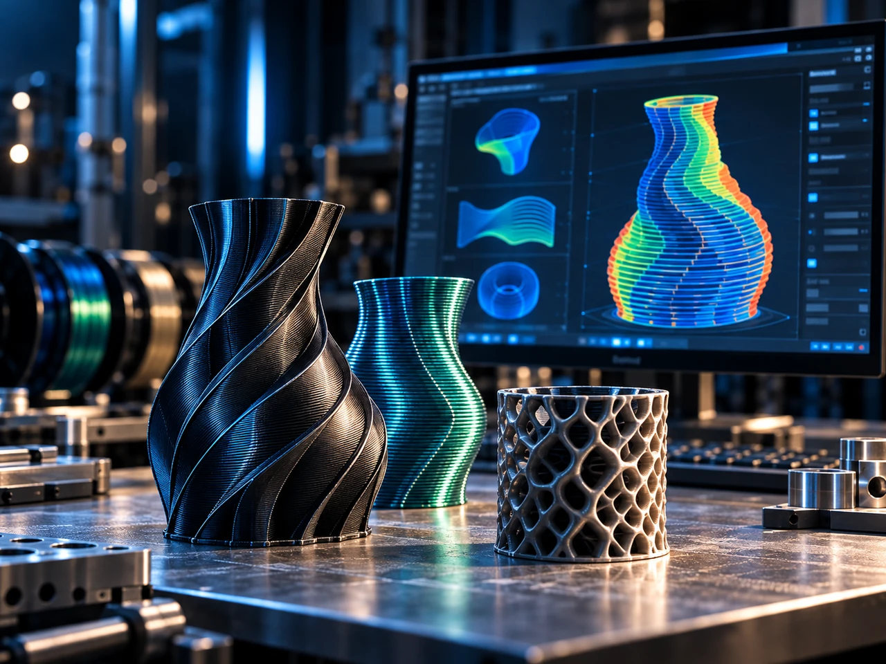

Geometrieverarbeitung
Geometrie für nicht-planare oder unterschiedlich orientierte Fertigung darstellen und analysieren.
Softwarearchitekturen erforschen, die komplexe Geometrie in maschinengerechte Strategien für die additive Fertigung umsetzen.
MYCNC3D untersucht Slicer-Architekturen für Fertigungsprozesse, die sich nicht vollständig durch herkömmliche horizontale Schichten und standardmäßige Drei-Achs-Bewegungen beschreiben lassen.

Projektüberblick
Mehr-Achs- und nicht-planare Prozesse bringen Informationen ein, die herkömmliche planare Slicer weitgehend ausblenden: lokale Auftragsorientierung, Maschinenreichweite, Werkzeugfreigang, kinematische Grenzen und gekoppelte Prozessbedingungen. MYCNC3D erforscht Softwarearchitekturen, die diese Randbedingungen abbilden und zugleich mit praktischen Abläufen der additiven Fertigung vereinbar bleiben.
Neue Fertigungsmöglichkeiten erfordern neue Softwareabstraktionen. Wenn die Auftragsrichtung variieren kann, werden Geometriezerlegung, Bahnausrichtung, Maschinenbedingungen und Prozessreihenfolge zu gekoppelten Aufgaben.
Eine robuste Architektur sollte wiederverwendbare Geometrie- und Prozesslogik von der maschinenspezifischen Ausführung trennen und beiden dennoch den Austausch notwendiger Informationen ermöglichen.
Warum dieses Thema wichtig ist
Eine Slicer-Architektur muss Geometrie, Maschinenbedingungen und Prozessziele zusammenführen und zugleich klare Grenzen zwischen allgemeiner Fertigungsstrategie und maschinenspezifischer Ausführung ermöglichen.
MYCNC3D bewertet derzeit verschiedene Software- und Geometrieverarbeitungsansätze, statt sich vorschnell auf eine einzelne Slicer-Architektur festzulegen.
Aktueller Schwerpunkt
Geometrie für nicht-planare oder unterschiedlich orientierte Fertigung darstellen und analysieren.
Planare, multiplanare, nicht-planare und hybride Zerlegungsmethoden vergleichen.
Maschinenlimits, Erreichbarkeit und Werkzeugfreigang in die Bahngenerierung einbeziehen.
Datenstrukturen für Geometrie, Prozessabsicht und Maschineninformationen entlang der Verarbeitungskette.
Allgemeine Fertigungsstrategie von maschinenspezifischer Bewegungserzeugung trennen.
Untersuchen, wie fortgeschrittene Funktionen in bestehende Software-Ökosysteme integriert werden können.
Technischer Ansatz
MYCNC3D bewertet aktuell mehrere Software- und Geometrieverarbeitungsansätze, bevor eine einzelne Slicer-Architektur festgelegt wird. Experimentelle Werkzeugbahnen liefern konkrete Fertigungsfälle, anhand derer sich wiederverwendbare Slicer-Funktionen bestimmen lassen.
Aktueller Stand
Funktionale Anforderungen und mögliche Softwarearchitekturen werden anhand von Experimenten, bestehenden Software-Ökosystemen und direkter Werkzeugbahngenerierung untersucht. Ein durchgängiger Prototyp, der Geometrie automatisch in eine fortgeschrittene maschinenlesbare Fertigungsstrategie umwandelt, wäre der Übergang zu EXPERIMENTELL.
Nächster Meilenstein
Der nächste Meilenstein ist ein Prototyp, der ein 3D-Modell übernimmt, mindestens eine nicht-konventionelle Slicing-Strategie anwendet, eine maschinenbewusste Bahn erzeugt und eine ausführbare Fertigungsdarstellung exportiert.
Die erzeugte Bahn muss anschließend auf einer repräsentativen Maschine physisch validiert werden.
Integrierte Plattform
Entwicklung fortschrittlicher Slicer wird gemeinsam mit den anderen Technologien der MYCNC3D-Plattform entwickelt.
Zusammenarbeit
MYCNC3D ist an technischem Austausch mit Softwareentwicklern, Spezialisten für Geometrieverarbeitung, Forschungslaboren und Anbietern von Plattformen für additive Fertigung interessiert.